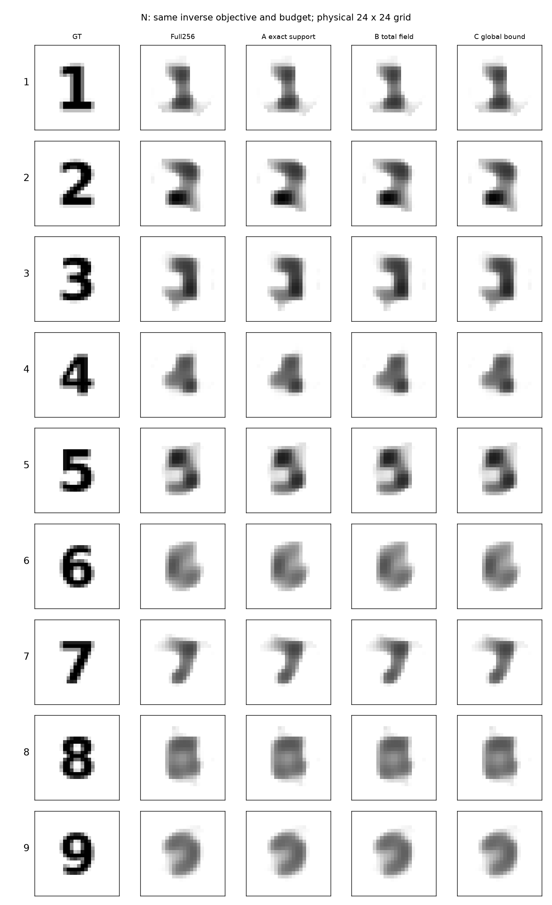
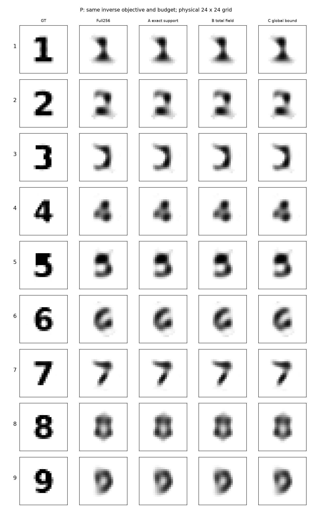
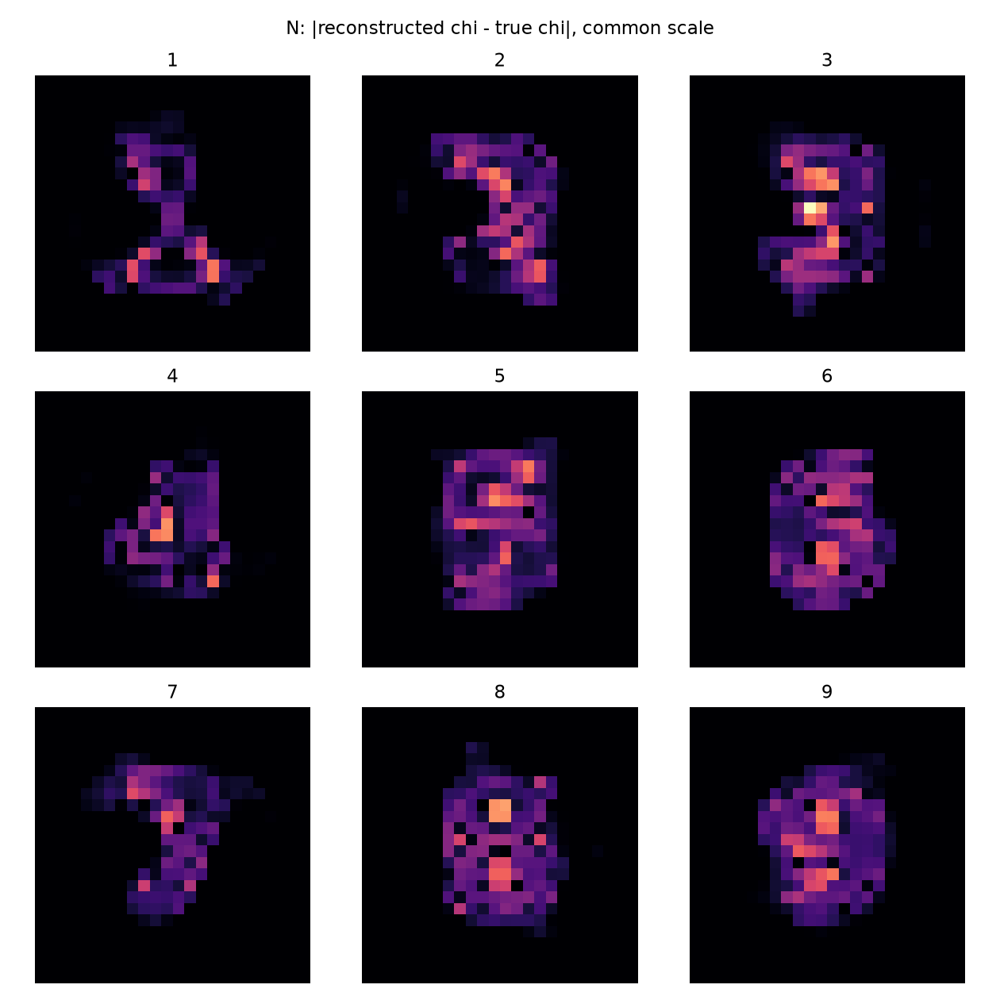
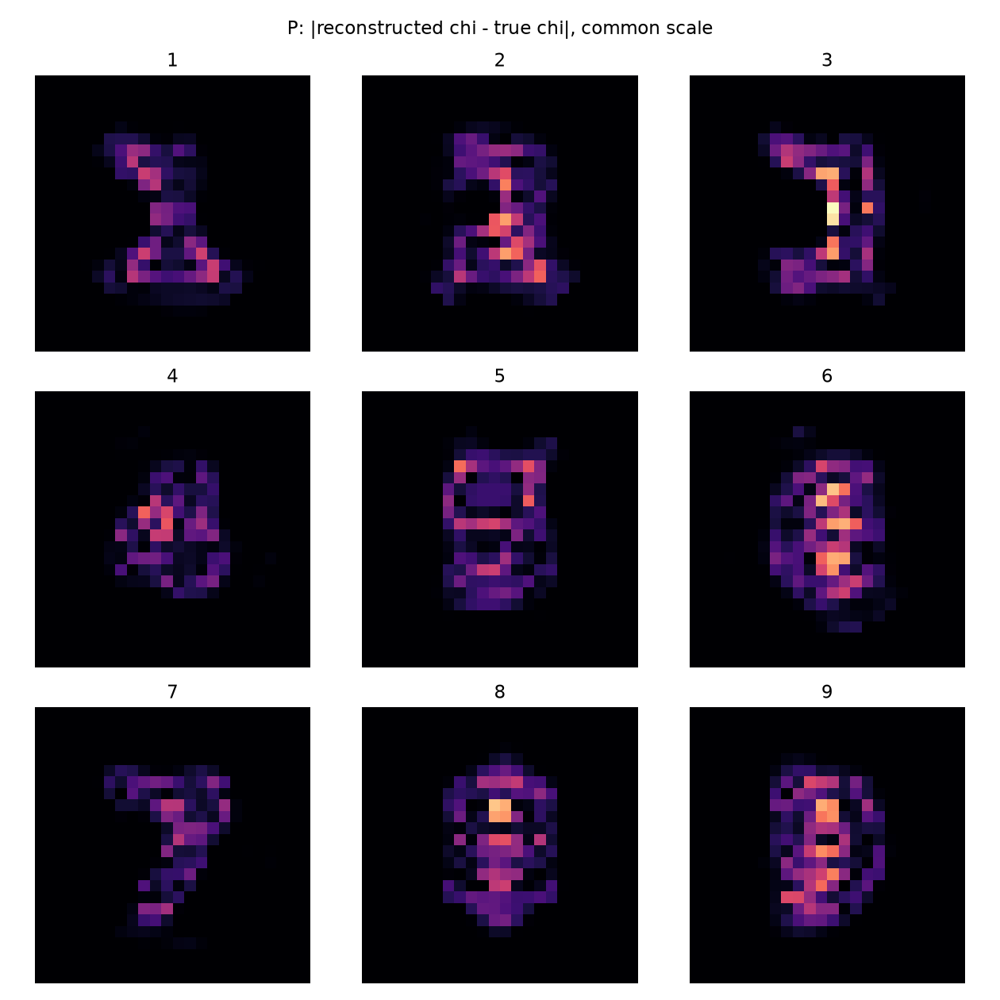

九数字实际视觉审查
主线程实际打开全部8张匿名后端九宫格PNG。先把A–I的盲读、0–5分和理由写入audit/BLIND_READ_N.json与BLIND_READ_P.json，随后才读BLIND_KEY_SEALED.json和GT。四种后端的图像无可见差别；盲读是主线程主观评价，不是独立人群识别实验。
| 数据 | 数字 | 盲读 | 视觉0–5 | IoU | GT孔洞→重建孔洞 | 完整Φ |
|---|---|---|---|---|---|---|
| N | 1 | 1 | 4 | 0.7288 | 0→0 | 268.723 |
| N | 2 | 2 | 3 | 0.6571 | 0→0 | 258.746 |
| N | 3 | 3 | 3 | 0.6806 | 0→0 | 262.344 |
| N | 4 | 4 | 3 | 0.8000 | 1→0 | 266.982 |
| N | 5 | 5 | 3 | 0.6486 | 0→0 | 266.824 |
| N | 6 | 6 | 3 | 0.4225 | 1→0 | 302.240 |
| N | 7 | 7 | 4 | 0.6923 | 0→0 | 273.402 |
| N | 8 | 0/8 | 1 | 0.5930 | 2→0 | 235.848 |
| N | 9 | 9/3 | 2 | 0.5205 | 1→0 | 264.478 |
| P | 1 | 1 | 4 | 0.7069 | 0→0 | 261.310 |
| P | 2 | 2 | 4 | 0.6061 | 0→0 | 243.574 |
| P | 3 | 3 | 4 | 0.6557 | 0→0 | 255.400 |
| P | 4 | 4 | 4 | 0.7333 | 1→0 | 258.652 |
| P | 5 | 5 | 3 | 0.7222 | 0→0 | 251.508 |
| P | 6 | 6 | 3 | 0.5405 | 1→0 | 220.020 |
| P | 7 | 7 | 4 | 0.6471 | 0→0 | 288.882 |
| P | 8 | 0/8 | 1 | 0.5882 | 2→1 | 265.256 |
| P | 9 | 9/3 | 2 | 0.5676 | 1→0 | 252.841 |
1和7较可靠。2/3/5的连接和弯折较模糊；4交叉可辨但内部孔丢失；6/9闭环未保留。8在N为0/2孔、P为1/2孔，均没有完整恢复。N9与P9盲读都记为9/3，8记为0/8，不能事后改成全部识别正确。
全部算法相同质量，不能凭A更快的小核将其视觉评分抬高。N与P的真值不同，二者SSIM或MSE不能作为纯算法因果比较。




显示是原24网格最近邻放大，无平滑显示或高分辨率重建伪装。mask、孔洞和连通数均在原网格计算。逐像素误差与拓扑不受视觉主观评分替代。
占比阈值0.5是预注册任务。新N模型的全局a–delta尺度gauge可影响占比掩膜，故另有事后固定材料对比度掩膜CSV；它没有替换主指标或改变任何图像。原P1 Full66不据此宣称普遍gauge。
逐数字评分理由的中文解释
这是对已封存盲读的中文说明，不在GT解封后改读数或分数。N/P分数为主线程主观0–5等级，不是独立人群识别统计。
| 数字 | N评分与理由 | P评分与理由 |
|---|---|---|
| 1 | 4：单竖干、顶帽与底脚可分，边界偏糊 | 4：竖干和底脚清楚 |
| 2 | 3：上横转弯和下横可辨，斜连接糊 | 4：上弧、下降段和底横可分 |
| 3 | 3：右竖连接上下左伸，腰部不清 | 4：可读作3，但注意本轮P真值本身已丢中横，不能当清晰3恢复成功 |
| 4 | 3：斜笔与右竖可辨，交叉处糊 | 4：斜笔与右竖交叉可分，但孔洞未保留 |
| 5 | 3：左上与右下团块、中弯可见 | 3：上部团块与下部弯曲可见，仍糊 |
| 6 | 3：左上弯干与下部圆团可见，孔弱 | 3：下部有凹区，但闭环不可靠 |
| 7 | 4：顶横和下降斜笔清楚 | 4：顶横、斜笔清楚 |
| 8 | 1：仅灰阶中央凹区，无两个清楚孔 | 1：一个长孔，未保留双孔 |
| 9 | 2：可读9或3，上环不清 | 2：9/3混淆，上环弱 |
主线程另行打开P真值后发现P3表示失败，见资格补充。这项GT表示判断与此前重建盲读分开存储，原盲读记录不改写。